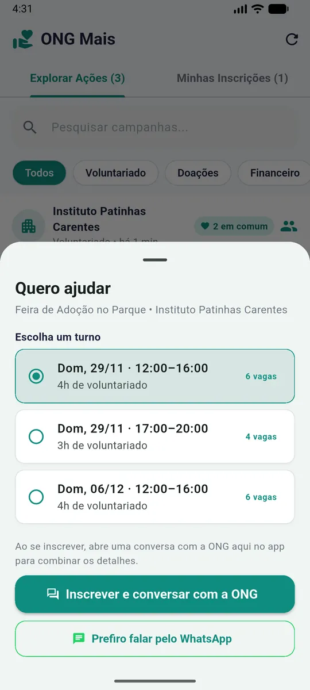
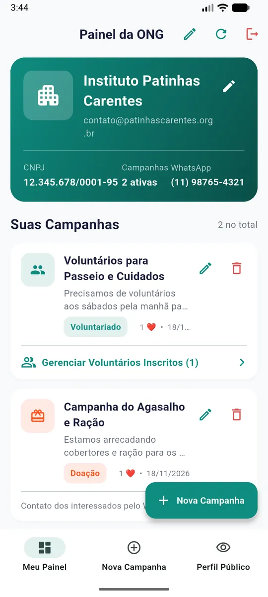
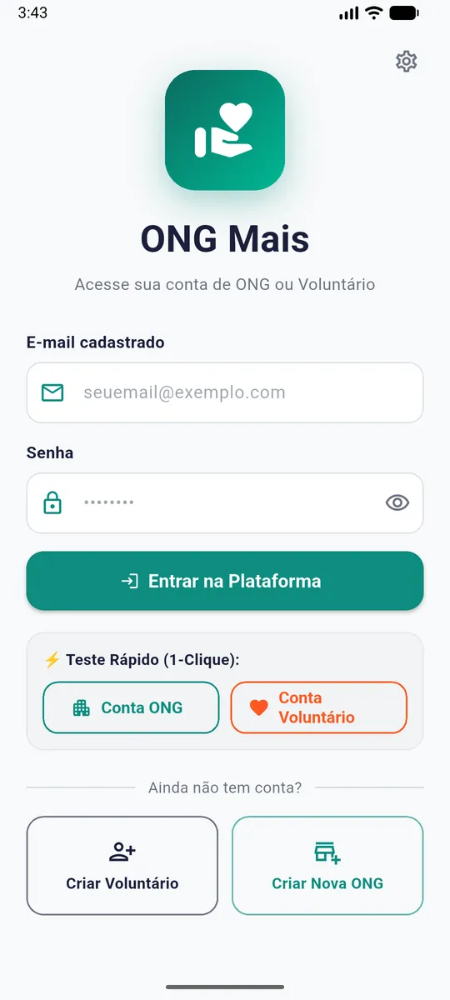
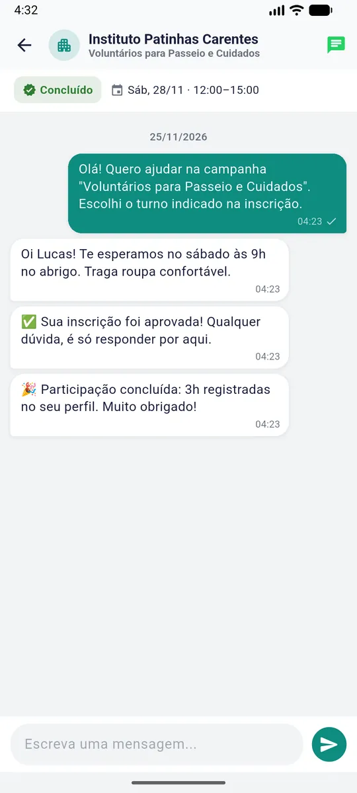
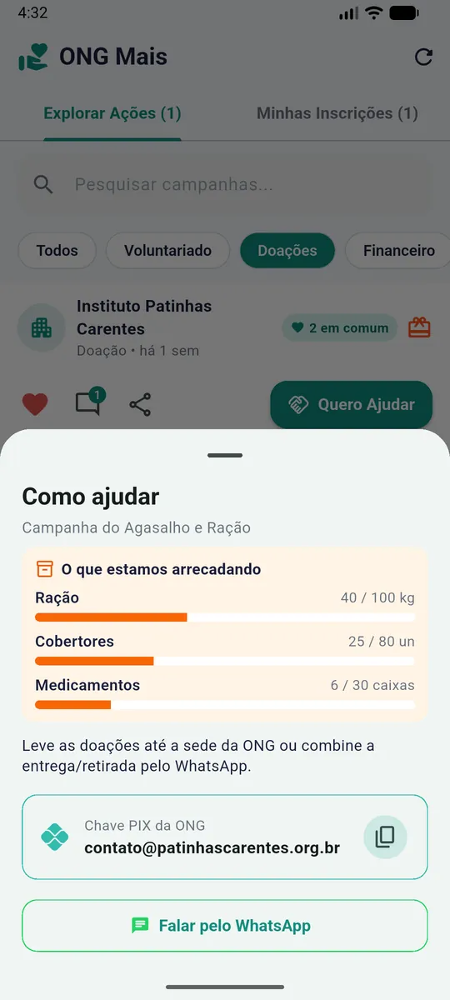
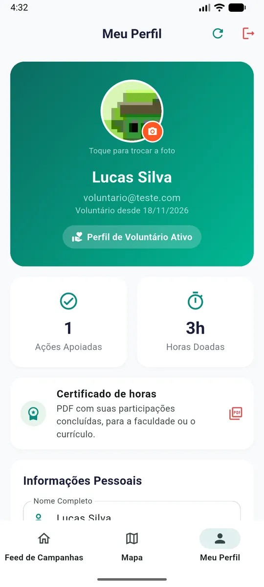
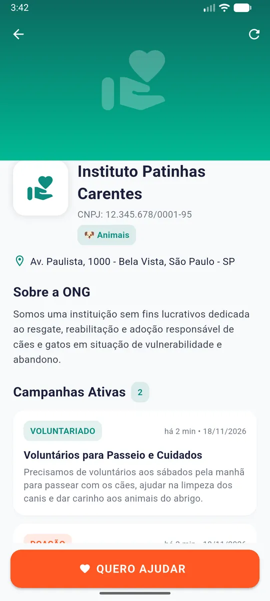
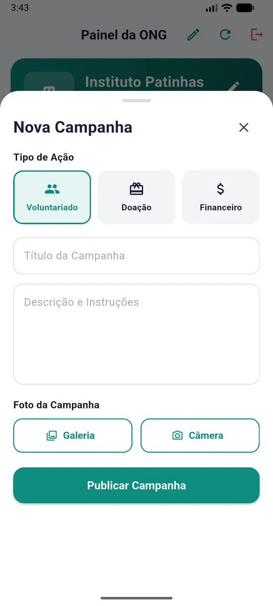
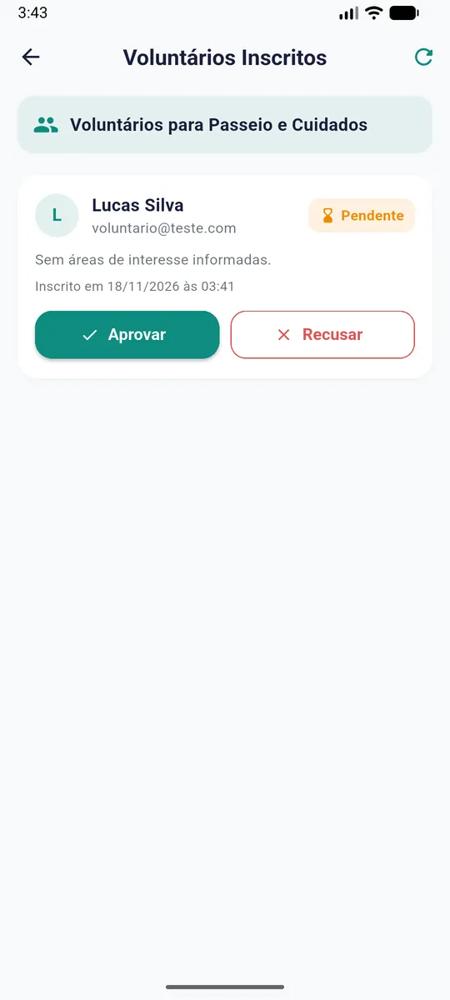

Quem quer ajudar encontra quem precisa.
O ONG Mais conecta voluntários a ONGs da sua região. Encontre campanhas no feed ou no mapa, escolha um turno, converse com a ONG pelo próprio app e acumule horas com certificado.
O projeto
Juntando quem tem vontade de ajudar com quem precisa de ajuda
Muita gente quer ser voluntária e não sabe por onde começar. Do outro lado, ONGs pequenas têm dificuldade para divulgar suas ações e organizar quem aparece para ajudar.
O ONG Mais resolve os dois lados: a ONG publica campanhas e organiza os inscritos; o voluntário descobre o que está acontecendo perto dele e se inscreve em poucos toques. O app foi desenvolvido como projeto acadêmico do curso de Engenharia de Software.
Para voluntários
Tudo para você encontrar a sua causa e fazer a diferença
Feed de campanhas
Busca por texto e filtros por tipo. Curta, comente e compartilhe as campanhas das ONGs.
Mapa de ONGs
Veja as ONGs no mapa, filtre por causa e descubra a distância em km de cada uma até você.
Turnos com vagasnovo
Toque em Quero Ajudar, escolha o dia e o horário que cabem na sua rotina e garanta sua vaga.
Chat com a ONGnovo
Cada inscrição abre uma conversa no próprio app, com confirmação de leitura e avisos de aprovação.
Doações com metasnovo
Acompanhe quanto já foi arrecadado de cada item e copie a chave PIX da ONG com um toque.
Certificado de horasnovo
Suas horas doadas ficam no perfil e viram um certificado em PDF para a faculdade ou o currículo.

Quero Ajudar
Da vontade à ação em três toques
Encontrou uma campanha que combina com você? O ONG Mais cuida do resto.
- Escolha um turno: cada campanha mostra datas, horários e quantas vagas ainda restam.
- Converse com a ONG: a inscrição já abre o chat, e o WhatsApp continua como opção.
- Acompanhe o status: pendente, aprovado, concluído, você é avisado a cada etapa.
- Pontos em comum: o app destaca as campanhas que combinam com os seus interesses.

Para ONGs
Um painel simples para divulgar e organizar
A ONG cria sua conta, publica campanhas e gerencia os voluntários, tudo pelo celular.
- Cadastro confiável: CNPJ validado, telefone com DDD e endereço preenchido pela localização.
- Campanhas em minutos: voluntariado, doação de itens com metas ou arrecadação via PIX, com foto.
- Gestão de inscritos: aprove, recuse ou conclua inscrições; as horas são registradas automaticamente.
- Aba Impacto: horas doadas, funil de inscrições, atividade semanal e campanhas que mais engajam.
- Comentários moderados: a ONG responde e modera o que é publicado nas suas campanhas.
Conheça o app
Por dentro do ONG Mais
Arraste para o lado para ver todas as telas →







Passo a passo
Como começar
Baixe e instale
Baixe o APK aqui no site e instale no seu Android.
Crie sua conta
Como voluntário ou como ONG. Para conhecer, use o Teste Rápido da tela de login.
Encontre uma causa
Explore o feed e o mapa e veja o que combina com seus interesses.
Ajude e registre
Inscreva-se num turno, converse com a ONG e veja suas horas no perfil.
Tecnologia
Como o ONG Mais foi construído
App mobile com backend próprio, desenvolvido em equipe como projeto da faculdade.
Dúvidas
Perguntas frequentes
O app é gratuito?
Sim. O ONG Mais é gratuito para voluntários e para ONGs.
Como instalo o APK?
Toque em “Baixar para Android”, abra o arquivo baixado e confirme a instalação. Na primeira vez, o Android pode pedir para permitir a instalação de apps desta fonte. É só autorizar e voltar.
Funciona no iPhone?
Por enquanto não. Nesta versão o ONG Mais está disponível apenas para Android.
Posso testar sem criar conta?
Pode. Na tela de login, use o botão Teste Rápido e entre como ONG ou como voluntário com uma conta de demonstração.
Preciso compartilhar minha localização?
A localização é usada para mostrar as ONGs mais próximas no mapa e calcular a distância até cada uma.
Minha senha fica segura?
Sim. As senhas são guardadas criptografadas (Bcrypt) e o acesso ao app usa tokens JWT.
Tenho uma ONG. Como participo?
Baixe o app, toque em “Criar Nova ONG” na tela de login e preencha os dados com o CNPJ da instituição. Depois é só publicar a primeira campanha.
Pronto para começar a ajudar?
Baixe o ONG Mais e descubra as causas que estão esperando por você, pertinho de casa.
Baixar APK · 58 MBAndroid · Ao instalar, permita “instalar apps desta fonte” se o celular pedir.